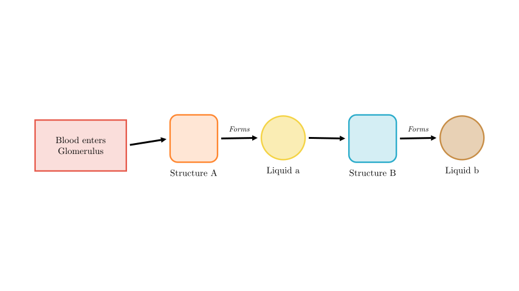
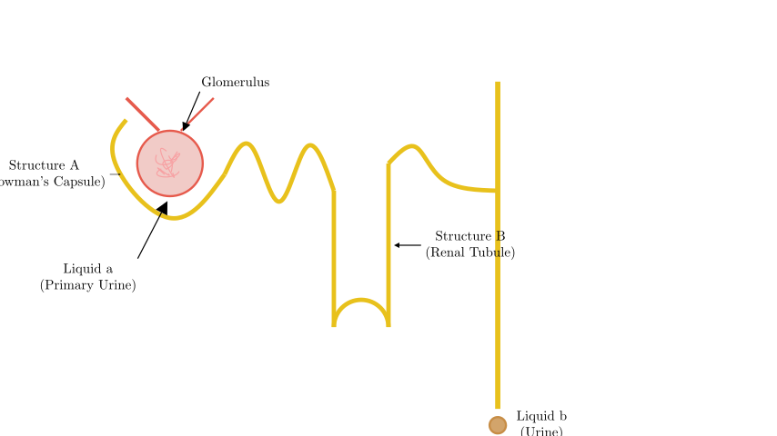
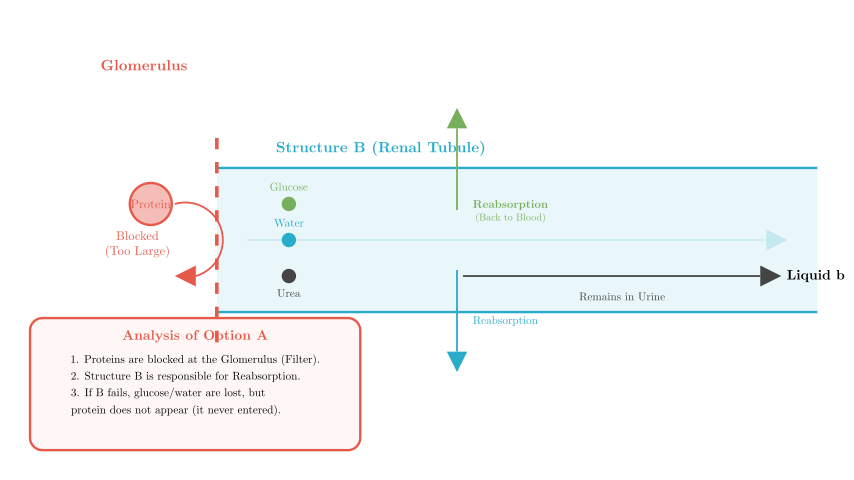
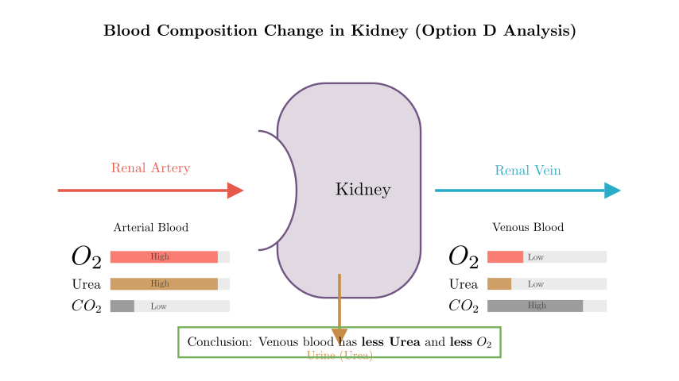

Problem Statement:
The figure illustrates the flowchart of urine formation, where 甲 (Jia) and 乙 (Yi) represent structures, and a and b represent liquids. Which of the following statements is INCORRECT?
A. If structure 乙 (Yi) in a normal person is anesthetized (paralyzed), then liquid b will contain protein. B. The liquids represented by a and b are primary urine (glomerular filtrate) and urine, respectively. C. The glomerulus, structure 甲 (Jia), and structure 乙 (Yi) together constitute the nephron. D. After blood flows through the kidney, arterial blood changes to venous blood, and urea decreases.
Solution Approach: To solve this, we must map the abstract flowchart to the anatomical structures of the kidney (specifically the nephron). We will identify the structures labeled '甲' and '乙' and the liquids 'a' and 'b' based on the physiology of urine formation (filtration and reabsorption). Then, we will evaluate each option to find the false statement.

Step 1: Decoding the Flowchart
Let's identify the biological structures and fluids based on the sequence of urine formation:
Now we have our mapping: * 甲 = Bowman's Capsule * a = Primary Urine * 乙 = Renal Tubule * b = Urine

Step 2: Evaluating Options B and C
Option B Analysis: The statement claims a is primary urine and b is urine. * Based on our mapping in Step 1, filtration produces primary urine (a) in the Bowman's Capsule, and reabsorption in the tubule results in final urine (b). * Conclusion: Option B is Correct.
Option C Analysis: The statement claims the Glomerulus, Structure A (Bowman's Capsule), and Structure B (Renal Tubule) form the Nephron. * Definition of a Nephron: It consists of the Renal Corpuscle (Glomerulus + Bowman's Capsule) and the Renal Tubule. * Conclusion: Option C is Correct.

Step 3: Evaluating Option A (The Critical Step)
Option A Analysis: The statement claims: "If Structure B (Renal Tubule) is anesthetized/paralyzed, then liquid b (Urine) will contain protein."
Why Protein is wrong: Since proteins are blocked at the Glomerulus, they aren't in the tubule to begin with. Therefore, tubular dysfunction does not cause protein to appear in the urine. Protein in the urine is a sign of Glomerular damage (Structure A or the Glomerulus itself), not Tubular damage.
Conclusion: Option A is INCORRECT.

Step 4: Evaluating Option D
Option D Analysis: The statement claims: "After blood flows through the kidney, arterial blood becomes venous blood, and urea decreases."
Final Verification: * A: Incorrect (Tubule damage causes glucose/water issues, not protein issues). * B: Correct (Primary urine -> Urine). * C: Correct (Components of the nephron). * D: Correct (Blood is cleaned and deoxygenated).
The question asks for the statement that is not correct.
Final Answer: A